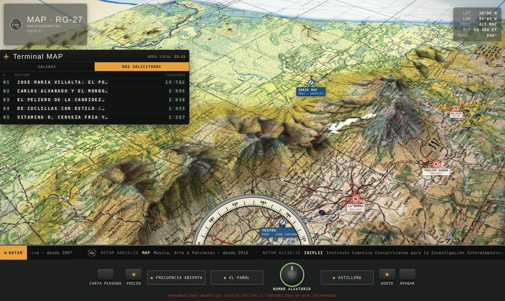
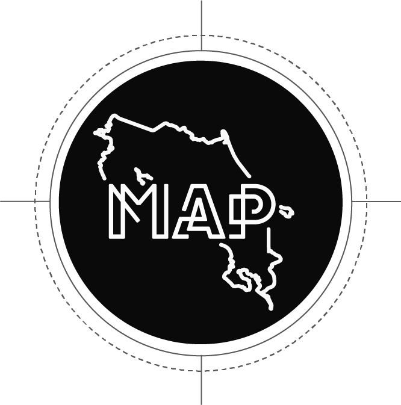

MAP Radio CR · desde 2016
Música, Arte & Patinetas
Un archivo vivo donde conviven escritores, músicos, artistas visuales, patinadores, cineastas, fotógrafos y personajes singulares de la cultura costarricense.
Podcast · 200+ episodiosSerie MAPCrónicas y textos

Secciones
Los cinco aeropuertos de la cartaSalidas
Últimos textos- 26Oct
- 25Oct
- 22Oct
- 17Oct
- 11Oct
Señales al aire
Lo que suena en la carta- 428 kHzLa BarraLa Cantina Ideal · San José
La cantina es un templo.
Leer → - 446 kHzTracción Humana4 historias de patineta · Cartago
No podían creer que yo lo hubiera hecho.
Leer → - 448 kHzLos Bastardos de PovedaPodcast · 9 retratos · Transmitiendo desde distintas ermitas
…poco a poco nos íbamos dando cuenta hacia dónde apuntaba la serie.
Ver los retratos → - 469 kHzEn VivoSerie MAP · Turrialba
Enciendo la televisión y nada me habla a mí.
Ver → - 418 kHzSala OscuraCine · Quepos
El negocio de los medios en Costa Rica es otro.
Abrir → - 487 kHzZona RestringidaEditorial · Cerro Chirripó
Escritor, rockero, patriota y ciudadano del mundo.
Leer → - 404 kHzEstación del Dr. ArkadyLos Estudios de Campo · 6 bitácoras · Cerros de Puriscal
…nada más que con menos carros y mejores cantinas.
Empezar por la bitácora 01 → - Zona de nubesObra GrisArquitectura · Cordillera de Talamanca
Zona sin cartografiar. Señal en preparación.
- Zona de nubesTallerArte · Valle de El General
Zona sin cartografiar. Señal en preparación.
NOTAM
Del mismo hangar NOTAM A0420/26Cannabis Airlines
NOTAM A0420/26Cannabis Airlines NOTAM A0007/26Nasional Skateboards
NOTAM A0007/26Nasional Skateboards
NOTAM A0016/26MAP NOTAM A1138/26IQCPLII
NOTAM A1138/26IQCPLII
Versión clásica de la portadaAbrir la carta de navegación →